This is a nice mystery that has turned the archeological world on it’s side. It’s a great read and I really hope that you all enjoy what is presented here. Translated from an old scan. Correct, and edited to fit this venue. I doubt that you will be able to find a complete recounting of this story elsewhere in the Western Internet today.
Father Carlo Crespi, who comes from Milan, has lived in the small town of Cuenca, Ecuador, for more than 50 years. He was a priest of the Church of Maria Auxiliadora.
Crespi was accepted by the local indians as a real friend.
They (the local indians) used to bring him presents from their hiding places.
Over a period of time the father had so many precious objects stored in his house and the church that one day he received permission from the Vatican to open a museum to display them.
This museum (in the Salesian School at Cuenca) grew and grew Until in 1960 it was one of the biggest museums in Ecuador, and Crespi was recognized as an archaeological authority.
But he has always been a rather embarrassing servant of his church, for he
asserts vehemently that he can prove that there was a direct connection between the Old World (Babylon) and the New World (pre-Inca civilizations); and that goes right against prevailing opinion.
Complicating matters, on 20th July 1962 there was an act of arson and the father’s museum was burnt down.
What Father Crespi managed to salvage from the damaged museum was housed in two long narrow rooms, which were in a terrible muddle.
Brass, copper, sheet-metal, zinc, tin and stone and wooden objects and in the midst of them all pure gold, sheet-gold, silver and sheet -silver.
Eric Van Danken in His book Gold of The Gods says of this Treasure “Let the Vatican grail guardian Father Crespi of Cuenca be the key witness to the pre-
Christian origin of the metal treasures. He said “‘Every’ thing that the Indians brought me from the tunnels dates to before Christ. “Most of the symbols and pre-historic representations are older than the Flood.’”
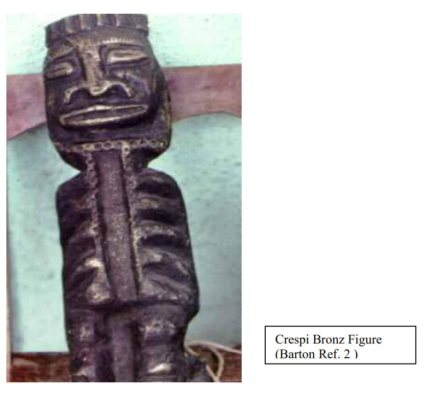
“Father Crespi has partially stacked his metal plaques by motifs, for example those with pictures of pyramids.
I took a close look at more than 40 objects.
All the pyramid engravings have four things in common: a sun, but more frequently several suns, is depicted above the pyramid; snakes are always flying
next to or over the pyramid; animals of various kinds are always present….
“Professor Miloslav Stingi is the leading South American scholar in the Iron Curtain countries; he graduated in the ancient civilizations of America. today he is a member of the Academy of Sciences at Prague and author of archaeological and ethnological books. In versunkenen Mayasta~dten (1971), for example, is highly acclaimed. Professor Stingl, who was a guest in my house, saw the photographs I had taken at Cuenca. ‘If these pictures are genuine, and everything indicates that they are, because no one makes forgeries in gold, at any rate not on such a large scale, this is the biggest archaeological sensation since the discovery of Troy. Years ago I myself supported the view that the Incas had no writing in the alphabetical sense of the word. And now I am faced with Inca writing. To be able to give a precise scientific verdict I should have to subject each plaque to a detailed and lengthy examination, and compare each one with material already available. For the moment I can only say that I am dumbfounded. The sun was often part of the scenery in known Inca engravings, but man was never equated with the sun, as I see time and again in these photographs. There are representations of men with sun's rays round their heads and there are men depicted with star points coming from them. The symbol of holy power has always been the head. But in these pictures the head is simultaneously sun or star. That points to new direct connections.’”
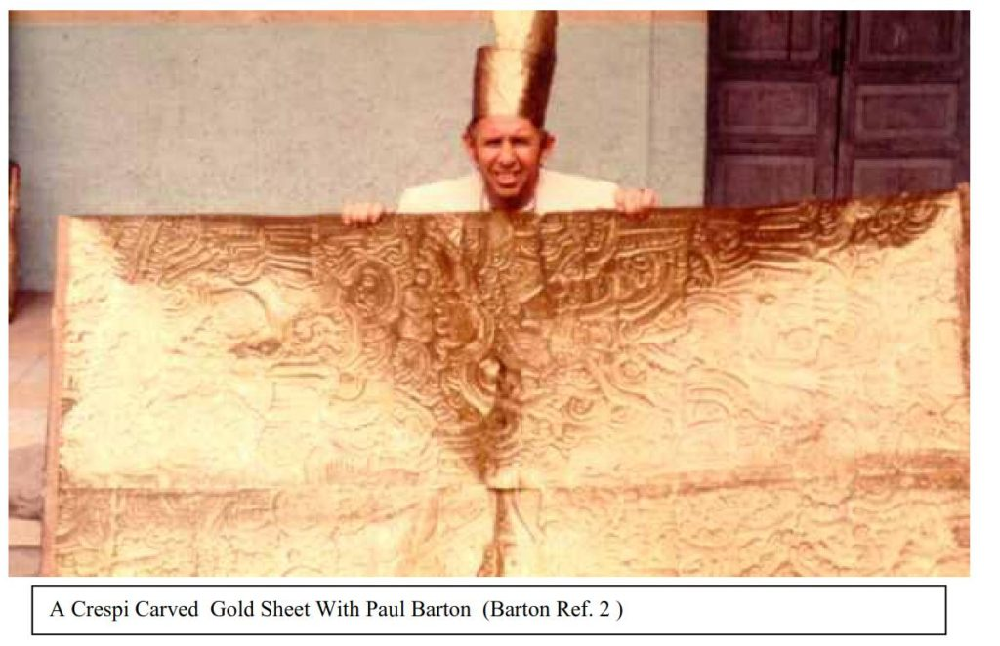
J Golden Barton in 1998 tells of a visit see Father Crespi with Dr. Paul Chessman from BYU and others in the late 1970’s. He writes (ref. 2): “High in the Andes mountains of Ecuador lies beautiful Cuenca, a peaceful city with red Spanish tile roofs and worn cobble stone streets. Townspeople go about their daily business happily trading with each other and the native Indians who populate the hills and valleys surrounding the village. The Indians speak the tongue of their Quechua" ancestors, who watched the sun rise over the Amazon hundreds of years before. With weathered and rosy cheeks they radiate a simplicity of harmony with the rugged mountains where they have worked time out of mind. The men of the tribe wear a single long braid of hair down their back underneath a Panamanian hat. Men, women and children are dressed in the same black and brown earth-tone cloth, edged with bright colored trim. Each shuffle along the paths long known by their forefathers, carrying them back and forth from village to village. Not many tourists travel this way and the service is unrushed but thorough.
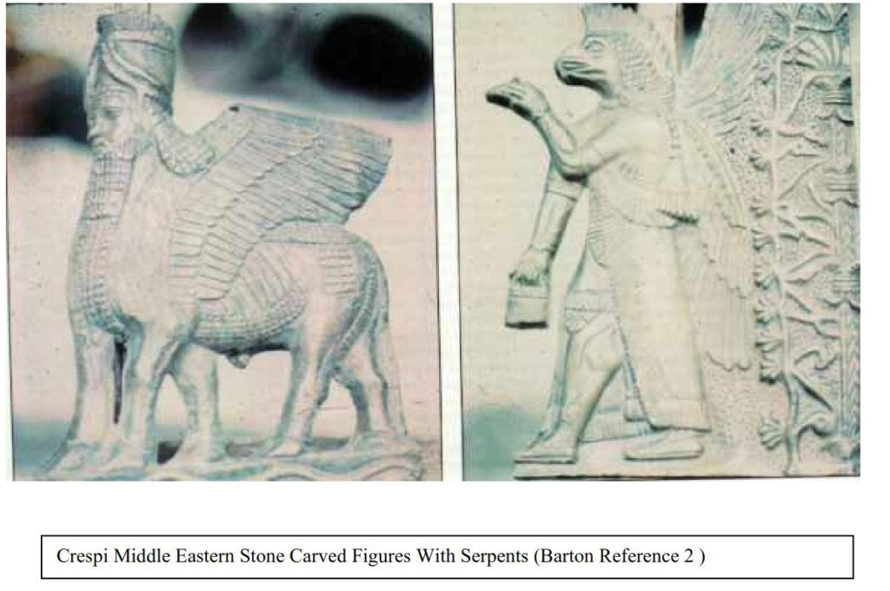
“A few blocks from the center of the village stands a Catholic "College of Salesino." Young men and women from prosperous families attend this secondary school, its classrooms facing a clay and terrazzo tiled courtyard. Entering through a side door, we found ourselves in a small open-air enclosure facing stately, hand-carved wooden gates. A friendly young man bid us enter through old wooden doors and ushered us into a private chamber. A few moments later, a bearded, monkish-looking man with twinkling eyes and a benign smile arrived and embraced Dr. Cheeseman. Although an octogenarian, he appeared in lively good health, despite his quaking robes which betrayed a shaky hand. We had heard that he was senile, but his personal behavior only radiated complete mental iompetence. So this was Father Carlos Crespi, Ecuador's unlikely focus of a unique archaeological controversy that continues to baffle everyone
who has heard about it.
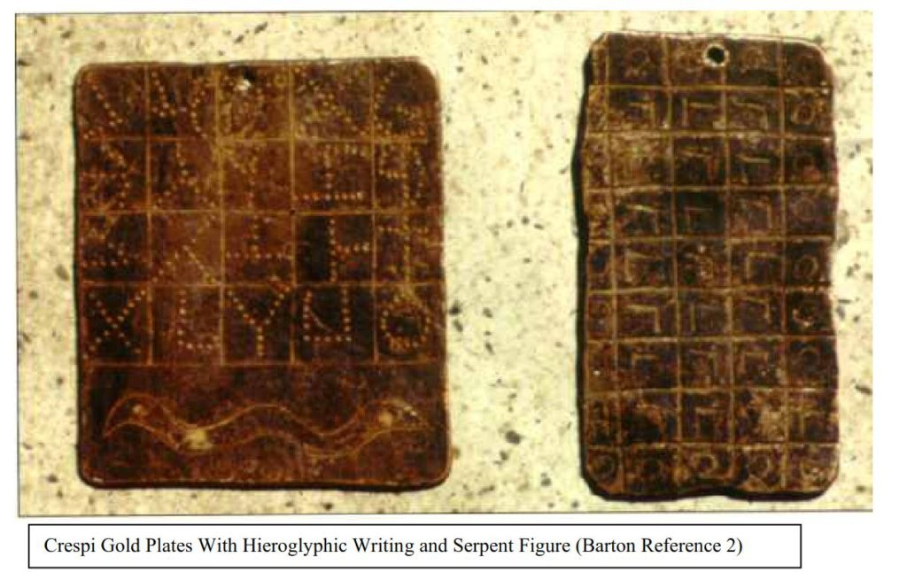
“He led us into an inner court of the school yard, where old Spanish wooden doors faced inward, and the oft-scrubbed floors gleamed with sunlight bouncing off the polished terrazzo. We were unprepared for what was to come. Father Crespi took a large key from a ring that hung from a braided belt around his robe, then moved to an obscure wooden door and turned the lock. Together with a single helper, he disappeared into the dark room. Both soon reappeared with a large piece of metal that had been molded and hammered into a long sheet. It looked like it might be made of gold. The sheet was inscribed with a curious artwork beyond identification.
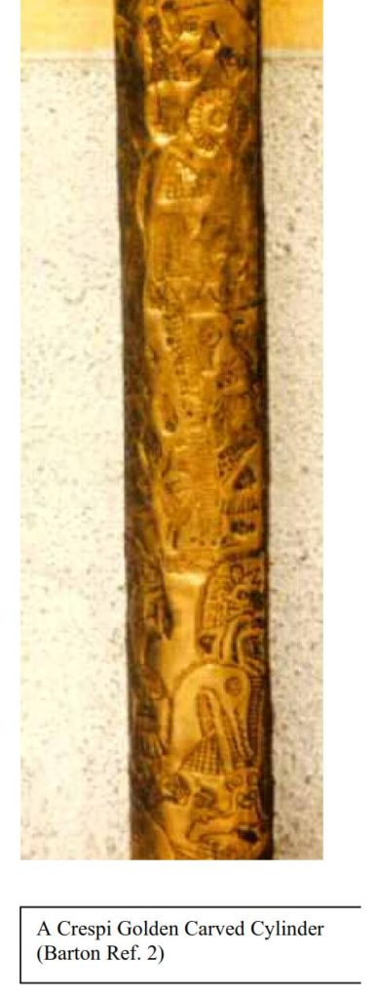
“Next, they dragged something from the darkness too large to be carried, and only with strenuous exertions were they able to lean it against the stucco wall. It stands twenty-two inches high and about seven inches wide its weight must have been prodigious. I reached my hand to touch the object and noticed it featured a dark covering, as if it had been painted. At first, I supposed it must have been made of lead, because it was soft and almost pliable. Then the nails of my fingers bit into the body of the figure through the paint and the gleam from the tell-tale scratch left no doubt that it was made of pure gold.
Our cameras began to click, and in the excitement Father Crespi talked excitedly, hardly stopping to breathe. He was our enthusiastic instructor, showing us each new piece as though it had just been brought to the light of day for the first time.
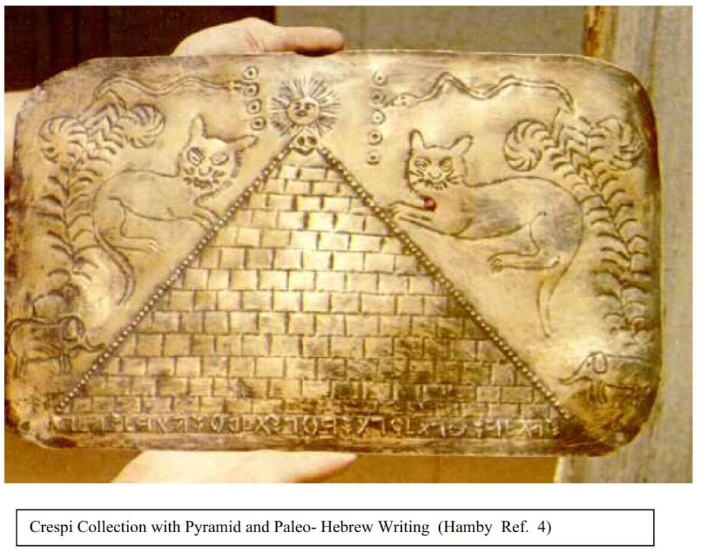
“What other wonders did his black vault contain, we wondered? The old man's nimble fingers joined the ends of two barren electric wires and the chamber was instantly revealed in the radiance of an incandescent globe. The gleam of gold, silver, and bronze everywhere added to the brightness of its interior. Shelves of dusty, worn ceramics, starry-eyed idols posturing in hideous stances or strange proportions. Stacked from floor to ceiling were hundreds of large cardboard pieces on which were wired metal bracelets, earrings, nose rings, and necklaces, some untarnished by time. Hide-scrapers, tools, implements of war, spears, axes, clubs, of wood, metal and stone were stacked everywhere. Father Crespi's mysterious room seemed overburdened with the treasures of an unknown antiquity. It literally over-flowed with bizarre artifacts, many wrought in precious metals. Most intriguing were the innumerable plates of bronze, brass and gold. Many bore strange inscriptions and hieroglyphic symbols. Others were replete with the engravings of incongruous animals--elephants, snakes, jaguars, wild beasts of every kind. The images of horse-drawn chariots were clearly etched into metal, calling to mind Juan Moricz's description of "a Roman chariot" in his underground chamber.
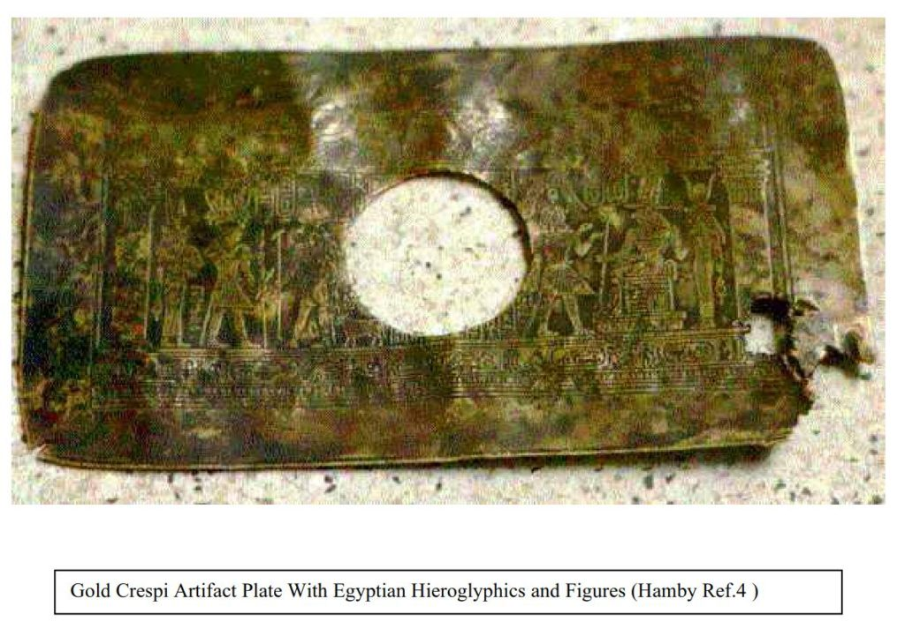
“We photographed a plate inscribed with representations of what appeared to be Egypt's step-pyramid. Still more plates contained artwork with what looked like Assyrian or Babylonian symbols. We grew dizzy with the gleaming opulence and historical anomaly all around us. Newell Parkin, a banker from Bountiful, Utah, Dr. Paul Cheeseman, Wayne Hamby, an undergraduate student from Brigham Young University, D. Craig Anderson, a Utah State University Research Associate, who acted as our interpreter, and I spent the afternoon amid these otherworldly splendors. In all my travels throughout the world, my visit to the Crespi Collection was to be their crowning experience.
“We asked Father Crespi how he came by such marvelous things. He said he headed the local parish for over fifty years after studying at Italy's University In Milan, where the subject of archaeology had caught his interest. Following graduation, he became a priest and was assigned to Ecuador's beautiful city of Cuenca to work among the Indians. In time, he came to love them. Moreover, in South America he had opportunity to further his archaeological interests. To his great surprise and delight, the religious celebrations over which he presided brought a host of Indians bearing gifts to the kindly man who
performed baptisms and marriages and was their friend in trouble. Aware of Father Crespi's enthusiasm for archaeology, the grateful Indians brought him ancient objects long hidden in the jungle. Soon, his collection steadily increased until, after fifty years, it filled many rooms.
“A museum was constructed to house these remarkable gifts, but a few years before our visit it was seriously damaged by an arsonist's fire. Father Crespi managed to salvage three full rooms of the relics, one
of relatively obscure and unimportant tributes, another filled with items of curious antiquity, but the last was a treasury of gold artifacts. Residing high among the Andes mountains in an obscure village, the old
man had no interest in fame or fortune. Few travelers knew of his collection and even fewer scientists. He was a private person with a big heart and a deep interest in the past.
‘Where and how do the Indians find these incredible things.,’ we wondered.
‘Oh, they just get them from the caves and subterranean chambers in the jungles,’ he answered in an offhand manner. 'There are over 200 kilo-meters of tunnels starting here in Cuenca. They run from the mountains down to the eastern lowlands near the Amazon." Wayne Hamby, an assistant to Cheeseman, spent a few more days with Father Crespi to catalogue and photograph the entire collection. His results went into the files of Dr. Cheeseman, who died after his retirement from the faculty of Brigham Young University.
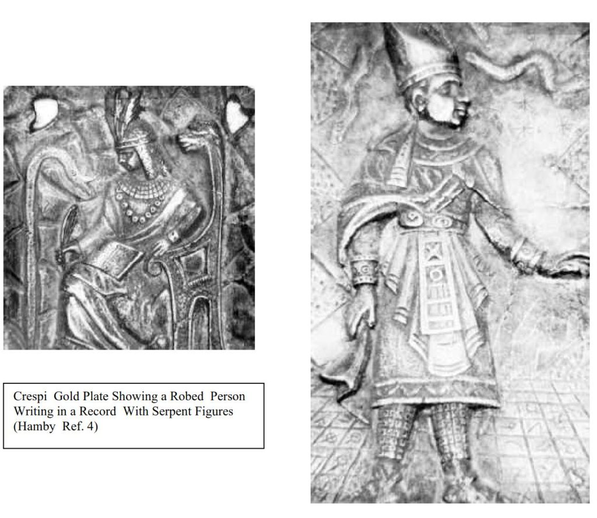
“Two years following our visit to the kindly priest, I returned to Cuenca with Ben Holbrook, our two young sons, and a pair of Ecuadoran LDS missionaries acting as interpreters. We were greeted by a young priest, who informed us that Carlos Crespi had passed away in January 1980, and his collection was no longer available for public view. In spite of my efforts to convince him that we had traveled a long distance to view the relics, he stubbornly refused to allow us to see the treasures. He insisted that the room with the artifacts could not be shown on orders from the Vatican. To my knowledge, no one from the outside world has seen the treasure since the death of the old Padre. “. Mr. Barton heard rumors that much of the treasure had been shipped to Rome to the Vatican.
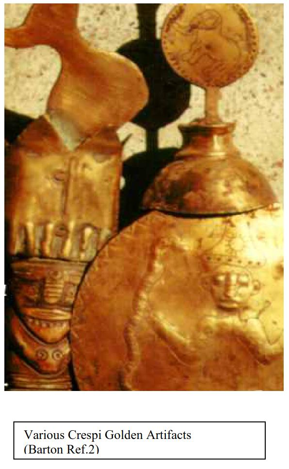
Richard Wingate a Florida based explorer and writer visited Father Crespi four times during the mid to late 1970’s and photographed the extensive artifact collection. He says this concerning his visits:
“IN A DUSTY, cramped shed on the side porch of the Church of Maria Auxiliadora in Cuenca, Ecuador, lies the most valuable archaeological treasure on earth. More than one million dollars worth of dazzling gold is cached here, and much silver, yet the hard money value of this forgotten hoard is not its
principal worth. There are ancient artifacts identified as Assyrian, Egyptian, Chinese, and African so perfect in workmanship and beauty that any museum director would regard them as first-class acquisitions.
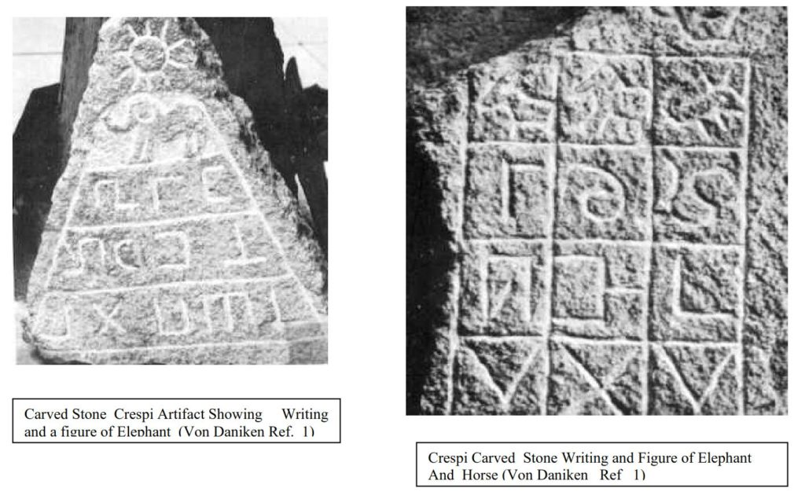
Since this treasure is the strangest collection of ancient archaeological objects in existence, its value lies in the historical questions it poses, and demands answers to.
Yet it is unknown to historians and deliberately neglected in the journals of orthodox archaeology….
‘Ah,’ the priest said, ‘enough flattery, then, let’s take a look.’ Without ceremony, he forced a key into an ancient, rusty padlock and opened the rickety door to his museum.
He touched two bare wires together and a watery yellow light went on.
Father Crespi was smiling like a man with a very remarkable secret.
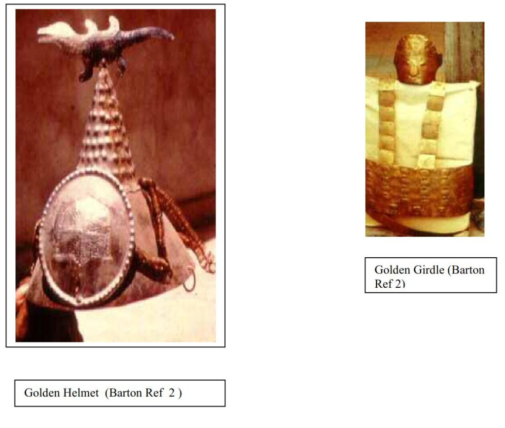
I was skeptical of the reports I had heard about this place, but now that cautious attitude gave’ way to unabashed astonishment.
Stacked against the far wall were golden mummy cases in the quasi-Egyptian
style with a black, baked-enamel finish.
A dozen complete sets of gleaming, golden ceremonial armor, beaten-gold Chaldean-style helmets, and golden inscribed plaques were piled haphazardly on the floor.
These dazzling memoirs of lost times were scattered among an array of beautifully carved Pacific Oceanic and African-styled wooden statues, shields of a rich, red copper, pottery, canes, sheets, and rolls of silver-colored metal, and strange, unidentifiable gears, pipes, and wheels which might have been parts to long-lost technological systems.
Rolls of intricately figured sheet metal stood haphazardly piled around the shed.
The priest explained that it had been torn off the interior walls of long abandoned, vine-choked buildings in the inaccessible eastern jungle.
The Indian artifact hunters bring this wallpaper in three different metals: gold, a
metallurgically unique, untarnished silver, and an unknown alloy with the appearance of shiny aluminum.
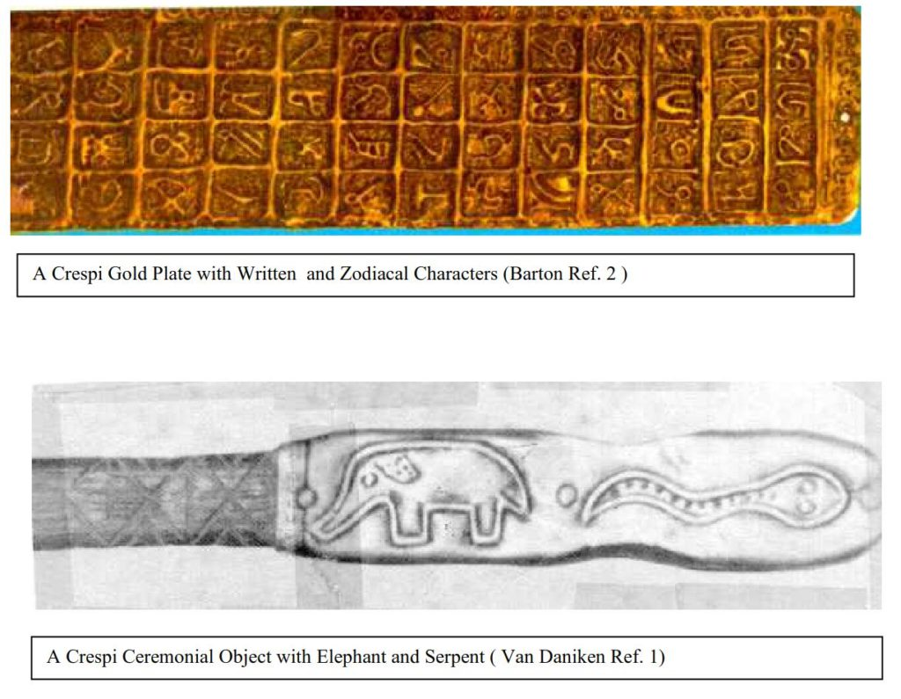
Every square inch of the peculiar sheet metal is decorated with intricate designs, some of them depicting long-forgotten ceremonial occasions and some of them humorous and cartoon like.
The rolls come in heights that vary, for the most part, from eight to twelve feet, and they are often fifteen to thirty feet long.
These lengths are composed of many individual four-foot sheets which have been artfully riveted together.
He showed me a dozen bronze plaques. Seemingly, they were among his favorite acquisitions.
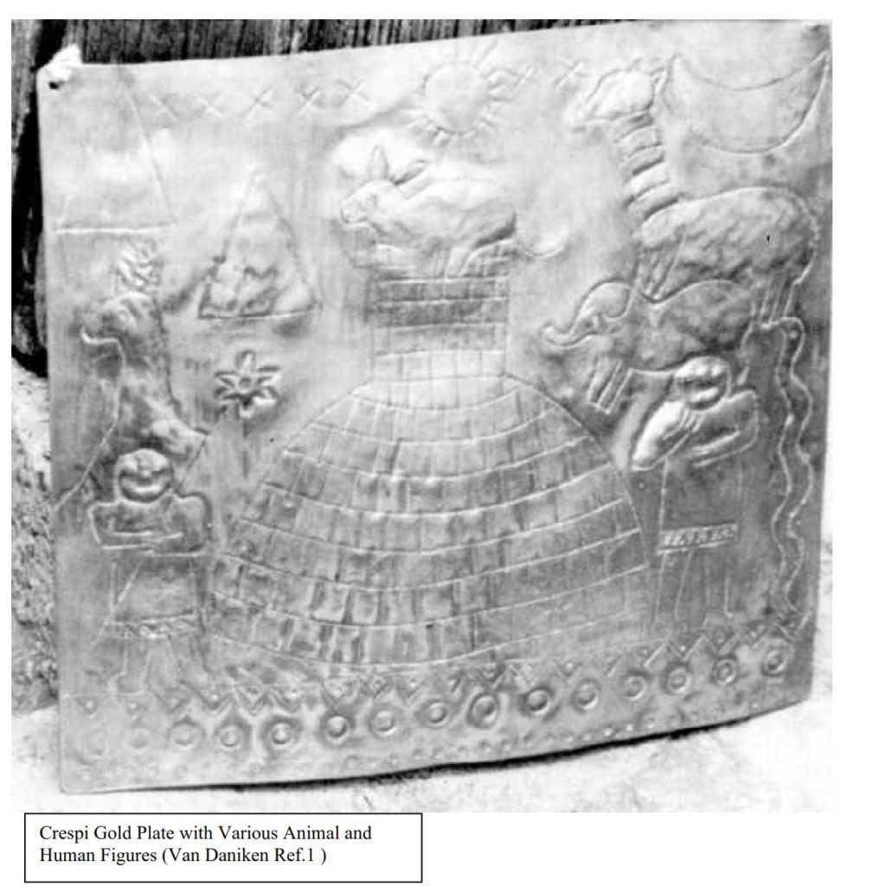
The illustrations borne by the plaques made me catch my breath.
Images of Egyptian princesses and Assyrian gods stared at me with a severity undiminished by the passage of centuries.
One of the plaques bore the image of a Caucasian man writing linear script with a quill pen.
Linear script?
A quill pen?
Needless to say, the Andes Indians did not have a written language when the Spanish arrived, let alone a tool for writing.
There were reportedly fifty-six solid gold plaques originally, but after a disastrous arson in 1962, which local political fanatics claimed credit for, Father
Crespi had molds made by a local casket maker and the best dozen of his precious plaques were duplicated in coffin-handle bronze.
The original gold plaques lie safe today in a bank vault.
“Father Crespi granted me permission to take photographs. Since most museums jealously guard their treasures from photographers, the priest’s open generosity won me over.
Lack of space inside the shed forced me to set up my tripod and camera in the sunlit outer courtyard.
The priest himself brought his treasures out for me to record on film.
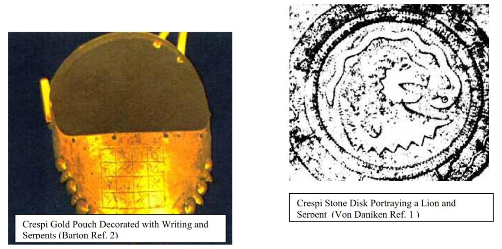
Hours passed, and the usual, afternoon equatorial winter rain began.
The Father was growing tired. We quit for the day.
I had exposed over ten rolls of film, taken more than three hundred pictures, and covered only a tiny percentage of the seventy thousand artifacts which filled the museum’s three rooms to their ceilings.
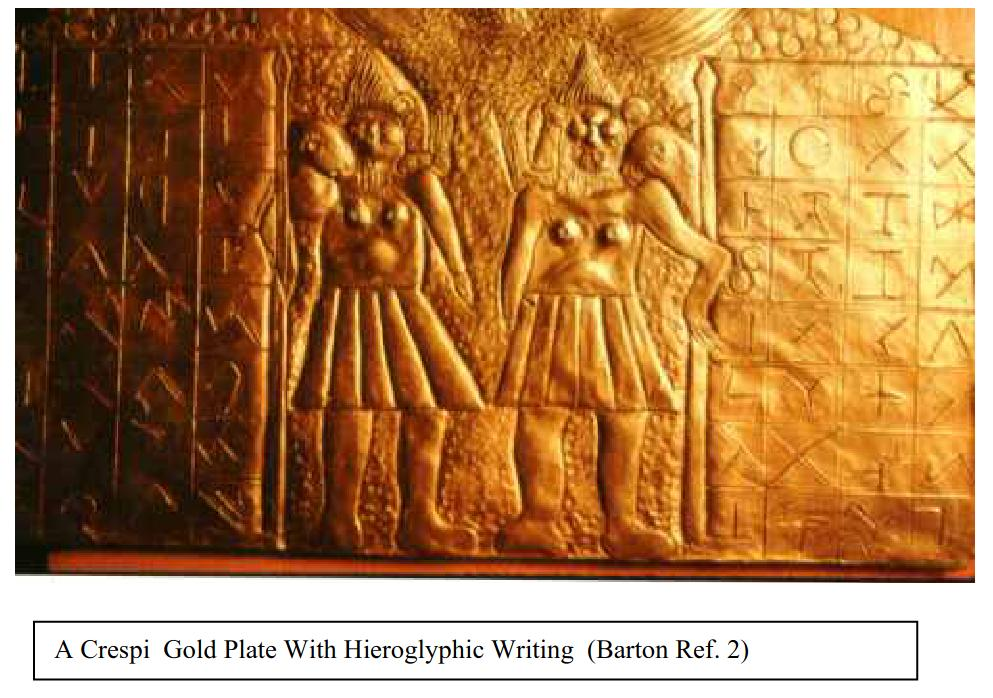
“As it turned out, I made not one but three additional visits to Father Crespi in Cuenca, exposed over three thousand frames, and I still have captured only 2 percent of the collection on film.
Between my second and third trips, the Padre’s treasure hunters apparently hit upon a fresh cache in the jungle caves.
So many new pieces arrived during this period that I was forced to climb over heaps of newly unearthed objects in order to get to certain items that I particularly wanted to photograph.
I found myself in the classic one- step-forward, two-steps-back situation, for new articles were arriving more rapidly than I could take pictures of the old!
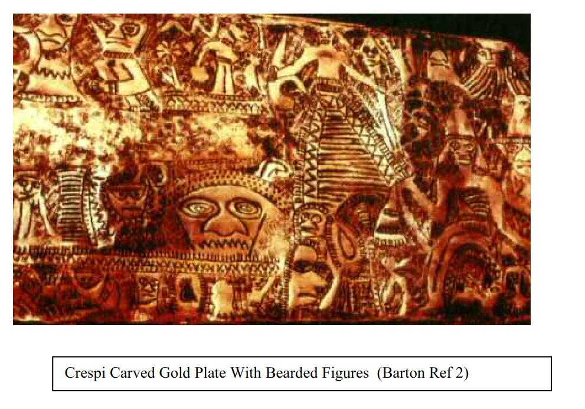
“One of the reasons for my continued efforts was my apprehension for Carlo Crespi’s advanced age.
He was born on April 29, 1891, and when he dies, the integrity of the collection is by no means assured.
It might be saved and protected by benevolent church authorities, but an auction to private dealers seems just as likely.
If the priceless museum is somehow disbursed before modern techniques of dating and evaluation can be applied to its artifacts, a great chance for the reevaluation of the history of the Western hemisphere will have been missed.
“In spite of the plethora of startling material in his museum, Father Crespi regrets that he missed acquiring most of the ‘treasure unearthed in the jungle, including most of the best articles, because he simply couldn’t match prices with other bidders.
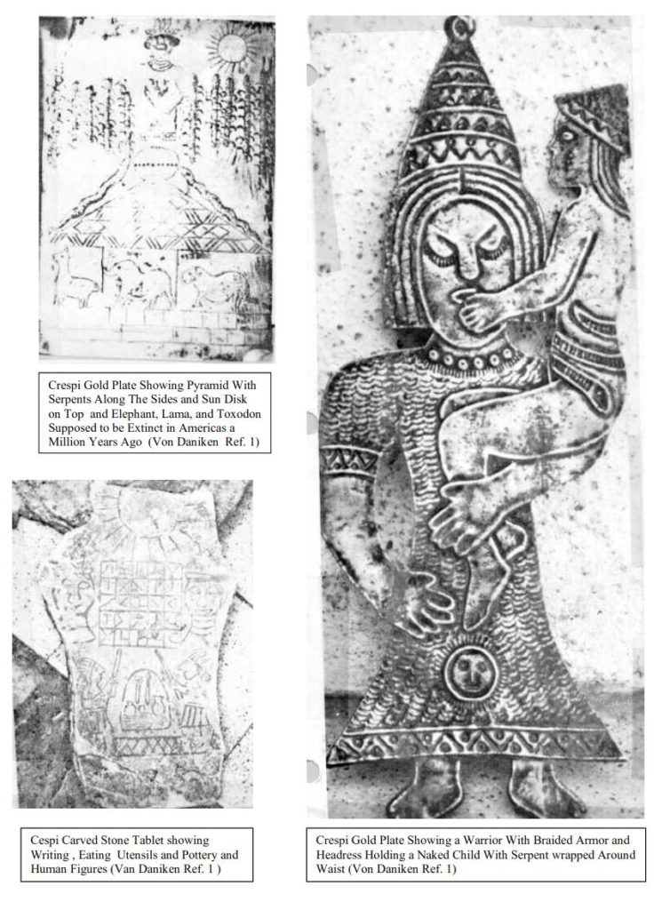
Maintaining the jungle museum has proven a difficult adventure for the Father in other ways as well.
The collection weathered an arson fire in 1962 which melted many objects, burned others, and substantially diminished its value.
Another fire occurred in 1974.
There have also been instances of outright theft.
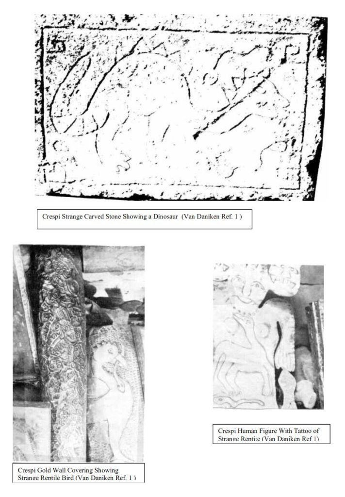
A few archaeologists who have heard of the collection are prone to an understandable condescension, because the shedful of artifacts poses a violent offense to the procedural r~es of their fraternity.
The articles in the trove have been discovered in sloppy, unsupervised, surreptitious digs by wholly untrained J ivaro Indian diggers.
Crespi is not even an accredited museum curator.
Although not an uneducated man~he holds a master’s degree in anthropology from a Milan, Italy, university.
The priest has no formal archaeological training, and the time he gives to his immense collection is stolen from a heavy schedule of parish duties, as I saw on my visits.
Crespi, furthermore, occasionally expresses a salty indifference to the judgment of the accepted experts.
The classification system of his museum is best described as chaotic.
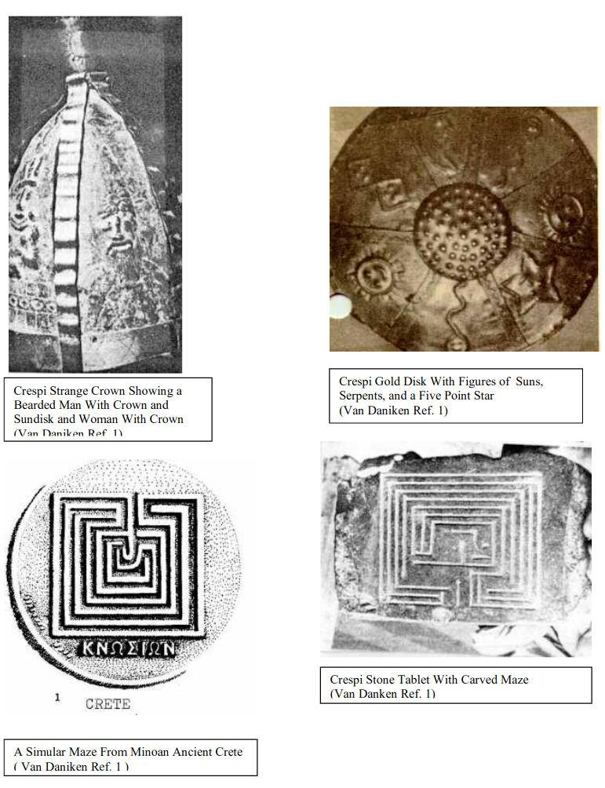
It does not make highly publicized acquisitions at blue ribbon auctions, for the Father wouldn’t have the money, even if he had the need.
Nor does it have advanced dating machinery, assistant curators, guards, guides, set hours, or any of the other appurtenances of the respectable, contemporary museum.
And yet the affection in which the Padre is held by his Shuara (Jivaro) collectors, has made it possible for him to accumulate the most significant single assemblage of South American artifacts anywhere.
“Carlo Crespi was raised in the prosperous northern Italian -city of Milan, where, after a youth spent with a comfortably wealthy family, he decided to join the Salesian Fathers. More than fifty-five years ago this missionary order sent Father Crespi to South America.
Ever since that voyage, Father Crespi has lived a life of voluntary poverty, sleeping on the floors of native huts with only a single blanket, and carelessly
eating poor but lovingly offered food.
He has cared for the people, listened to their stories of fabulous deep-jungle temples, explored the treasure-filled Tayos caves, and stubbornly provided a museum for the strange artifacts of the country…
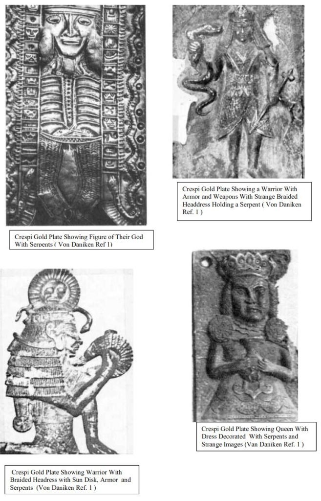
When Father Crespi and his Indian diggers tell of the places where they find their
artifacts, they described giant pyramids, immense, deserted cities, fantastic sacred tunnels, and caves.
The cities, they say, still shine with a mysterious, cool bluish light when the sun goes down.
The tunnels are reportedly large enough to drive a locomotive through.
They have cut-stone entrances and walls which, by native account, are as smooth as glass.
And it is these tunnels, at least according to the Indian explorers, that hold the bulk of the material being offered to the Maria Auxiliadora museum and to other collectors.
It is a fantastic tale, but when one sees the evidence, the thousands of gold treasured trinkets, the story of a vast tunnel system become nearly plausible.
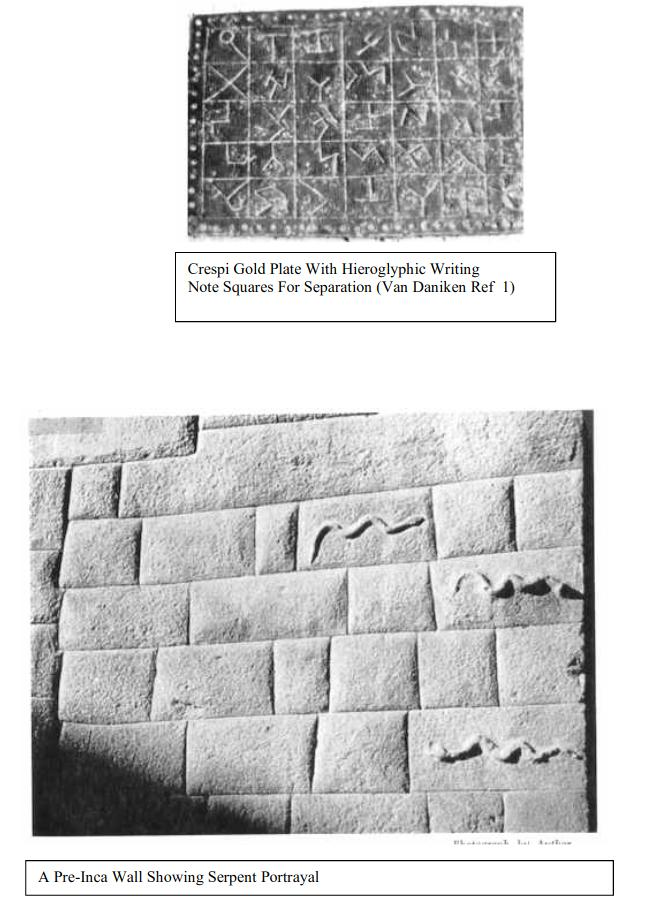
“Although legend tells of this tunnel network honeycombing all of Ecuador and Peru, the only part of it that has, to my knowledge, been documented, is located in the very dangerous Jivaro country, between the Santiago and Morona rivers, near Tayos.
Unfortunately, this area is decidedly out of bounds for the foreign adventurer.
The local Indians have killed at least four inquisitive outsiders in the last two years.
Yet the tunnels of the Shuara tribes (Jivaro) have been photographed.
A naturalized Ecuadorian named Juan Moricz took several rolls of high-quality pictures, verified in this way the accounts the natives have been giving
Crespi, and subsequently lay legal claim to the entire tunnel network.
His grandiose claim was denied by the courts, but his photographs cannot be.
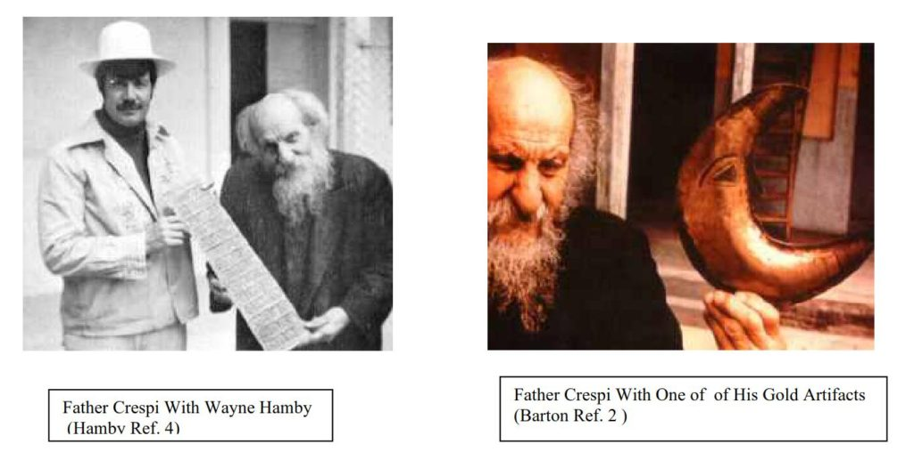
<Portion unrecoverable> ...less than the bullion value of the precious metal.” (p. 139) The “heavy mineral crust enamel coating” of many artifacts indicates that they were “buried under searing volcanic heat.” (p. 139)
Concerning sophisticated artifacts, like the Phoenician calendars, the golden Middle Eastern helmets, the golden armor, and the golden plaques: these “would bring hundreds of thousands of dollars and perhaps millions on the private market; to suggest that a sophisticated forger unloaded them on the priest for a low price is to deny the greed that motivates forgery!” (p. 140)
Concerning a cast steel shield: “Steel casting is beyond the metallurgical capacity of present day Tayos Indians.” (p. 143)
(B) Fakes
Regarding fakes (which Crespi knowingly purchases in his casual, humanitarian style, at the same time chiding the seller): “The modern solder and hacksaw marks give them away.” (p. 136)
(C) Hybrid real-fakes
Far from creating fakes in order to reap high profits, some of the Indian diggers in Ecuador have cut up and reshaped genuinely ancient and priceless materials in order to get any kind of price at all for it. We have mentioned earlier the ebony column...carved with the Ecuadorian
national seal and decorated with gold cut from a sheet of mysterious ancient wallpaper.” (p. 139)
Picture (p. 36)—“Obviously genuine copper ‘radiators’ were redecorated by Indian discoverers.”
Picture (p. 39)—“Heavy brass ‘bass viol’ a real-fake soldered together from original thick wall sheeting.” The brass sheet metal is genuine and very old, but the instrument was crafted by modern forgers. One can see where existing designs on the brass sheets were cut through in the
manufacture of the article.
Picture (p. 142)—“Genuine silver wrapped gold trimmed elephant. Yet decorated with modern brass thumb tacks.”
Picture (p. 146)—“Bottom of tin can. Clumsily fire blackened to simulate real volcanic mineral patina on genuine objects. The carbon on this olive oil can be rubbed off on a sheet of paper. The black patina on most of Crespi’s material is enameled to the metal.”
In summary: “The genuine green porphyry patina on many of the articles,...the enormous
quantities of cheaply bought gold articles, the metallurgical uniqueness of some of the artifacts (such as the platinum nose cone and the radiators), the Mid-eastern artistic motifs, and the abundance of art ides for which little or no market exists (such as the air pipes and the
‘wallpaper’) pose difficult questions for those who carelessly write the collection off as a hoax.”
(p. 140)
References
1. Eric Van Daniken Gold of The Gods (1973)
2. J. Golden Barton The Lost Gold of Ancient Ecuador, Ancient American Vol. 4 Number 25, 1998
3. Richard Wingate Lost Outpost of Atlantis 1980 Everest House Publishing Company
4. Wayne Hamby Voices From The Dust 1977 Osmond Publishing Company